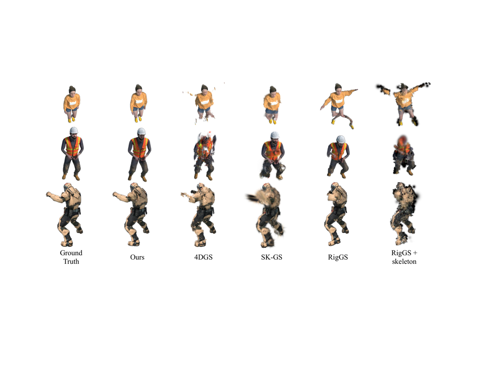
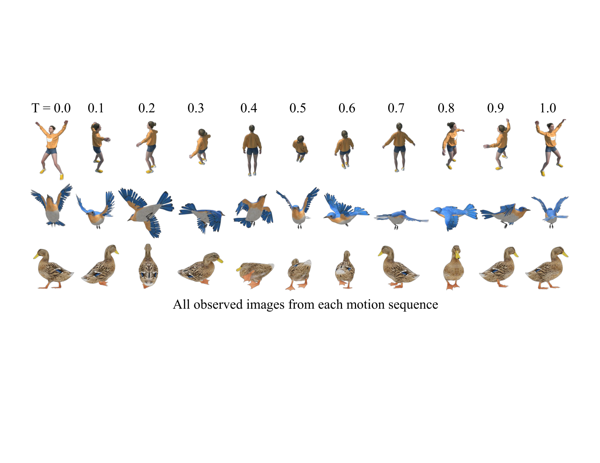
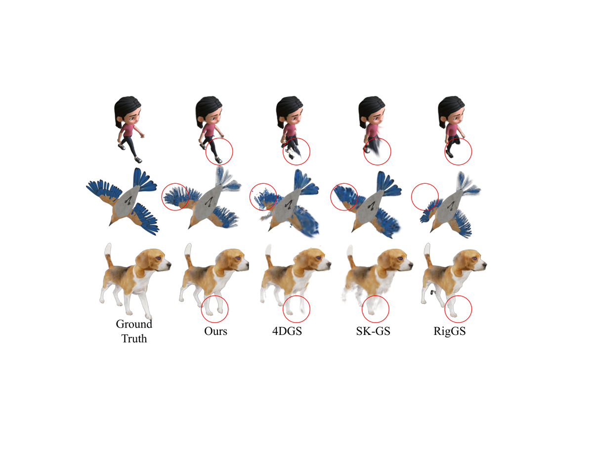
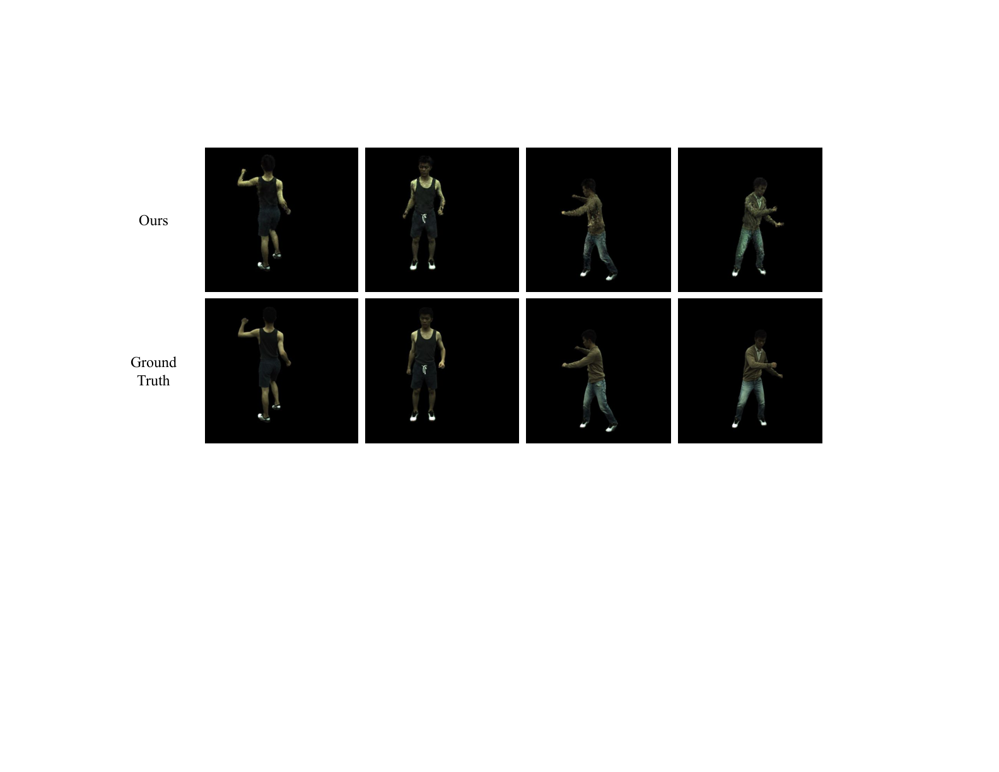
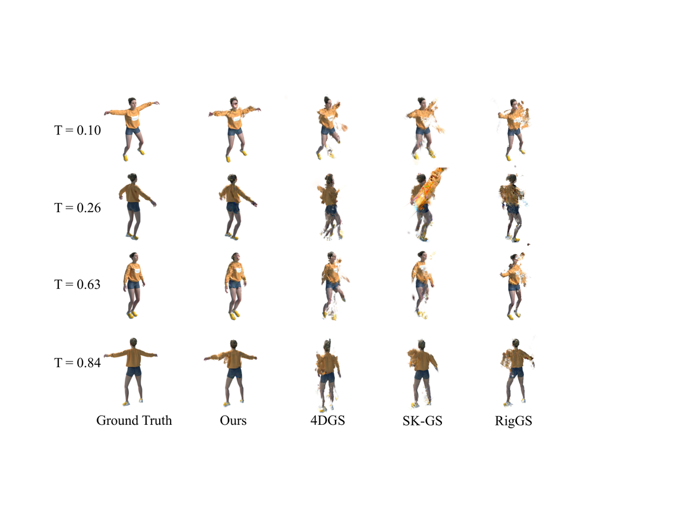
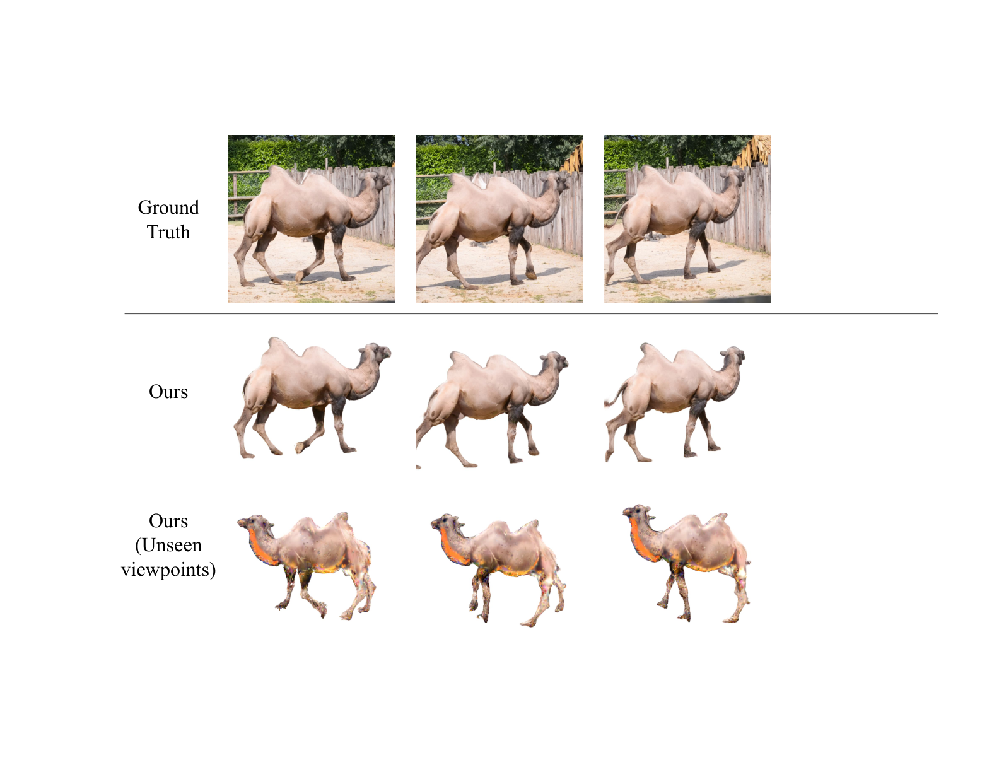

SV-GS
简单摘要
我们提出了一个框架，可以在稀疏观测下同时估计变形模型和物体随时间的运动。通过仅使关节姿态估计器与时间相关，我们的模型可以实现平滑的运动插值，同时保留学习的几何细节。
从图像重建动态目标是一个长期存在的计算机视觉问题，在运动分析、AR/VR 和动态场景理解中都有应用。虽然最近在神经和基于高斯的表示方面取得的进展已经显示出令人印象深刻的结果，但大多数方法依赖于具有密集时间覆盖的单目或多视图视频。
核心创新
第一个关键新意是：重建大范围移动的动态目标具有挑战性。这部分不是单独的小修小补，而是在原论文方法链路里承担了明确作用。
第二个关键新意是：动态对象重建的标准方法需要在观看空间和时间维度上进行密集覆盖，通常依赖于在每个时间步骤捕获的多视图视频。这部分不是单独的小修小补，而是在原论文方法链路里承担了明确作用。
第三个关键新意是：我们提出了一个框架，可以在稀疏观测下同时估计变形模型和物体随时间的运动。这部分不是单独的小修小补，而是在原论文方法链路里承担了明确作用。
第四个关键新意是：对合成数据集的实验表明，我们的方法在稀疏观测下的 PSNR 性能优于现有方法高达 34%。这部分不是单独的小修小补，而是在原论文方法链路里承担了明确作用。
技术细节
我们的目标是从稀疏的时间观察中重建一个铰接的动态目标，其中每个时间步仅包含从任意视点捕获的单个姿势图像。如 dyn :method 中所示，从构建目标的初始静态 3D 重建开始。在多视图设置中，我们遵循标准流程，通过最小化渲染图像和地面实况图像之间的感知损失来优化高斯参数。
3.1 场景表现
我们采用 3D 高斯分布 (3DGS) 作为我们的场景表示，因为它具有快速的优化速度和明确的、物理上可解释的参数化。给定相机姿势，我们可以从 渲染图像，其中像素颜色是通过沿光线方向混合确定的。在多视图设置中，我们遵循标准流程，通过最小化渲染图像和地面实况图像之间的感知损失来优化高斯参数。

$$ color = \sum_k c_k \alpha_k \prod_{j=1}^{k-1} (1 - \alpha_j) $$
放在“方法”这一部分看，它重点在定义或约束 color 这一项。这条式子描述了多个分量的聚合或逐步合成过程。它通常表示模型如何把局部贡献、概率权重或多项损失累积成最终结果。
$$ q^t, p^t = MLP_{\Theta}(\gamma(t)) $$
这条式子表示作者把时间编码送入一个小型网络，直接预测当前时刻的姿态参数或关节变量。这样模型在未见时间步也能先得到一个连续、可插值的运动骨架。
$$ \hat{\mymat{R}^t}, \hat{T^t} = fk(\myset{F}, q^t, p^t) $$
这条式子把前面若干观测、条件或中间特征，经过一个显式模块映射成新的状态变量。它的意义在于把复杂流程压缩成清晰的函数接口，方便后续模块继续消费这个中间结果。
$$ \mu_i^t = \sum_{j=1}^B w_{i,j}(\hat{\mymat{R}^t_j} \mu_i + \hat{T^t_j}) $$
这条式子把每个骨骼对高斯的影响归一化成权重分布。归一化之后，各骨骼的贡献可以直接拿来做线性蒙皮，不会因为绝对尺度不同而破坏整体变形稳定性。
$$ w_{i,j} = \frac{\hat{w_{i,j}}}{ \sum_{j=1}^B \hat{w_{i,j}}}, $$
放在“方法”这一部分看，它重点在定义或约束 w i,j 这一项。这条式子把每个骨骼对高斯的影响归一化成权重分布。归一化之后，各骨骼的贡献可以直接拿来做线性蒙皮，不会因为绝对尺度不同而破坏整体变形稳定性。
$$ \hat{w_{i,j}} = \Delta w_{i,j} \ exp(- \frac{d_{i,j}^2}{2r_j^2}) $$
这条式子把学习到的骨骼亲和度与一个基于空间距离的高斯衰减项结合起来，得到未归一化蒙皮权重。它的含义是：某个高斯既要在语义上属于该骨骼，也要在空间上离该骨骼足够近，才会被分配较大权重。
$$ \Delta w_{i,j} = MLP_{\Phi}(\gamma(\mu_i)) $$
放在“方法”这一部分看，它重点在定义或约束 Delta w i,j 这一项。这条式子给出了论文中的一条核心计算关系。理解时重点看左侧最终输出是什么，以及右侧各部分分别承担什么作用。
$$ \hat{\mu_i^t } = \mu_i^t + MLP_\Psi(\gamma(\mu_i), \mymat{R}^t) $$
这条式子是在定义一个可直接计算的中间量：右侧把相对位置、方向、权重或比例关系组合起来，左侧则把这个组合结果记成后续模块要反复使用的变量。
3.2 优化
通过最小化以下损失来联合优化所有变形参数。主要目标是强制变形高斯在从相应视点渲染时与观察到的图像相匹配。细节变形场在规范框架中定义，以对每个高斯基元的偏移进行建模，以便渲染的图像反映更精细的运动细节。
$$ \mathcal{L} = \lambda_{1}\mathcal{L}_{perceptual} + \lambda_{2}\mathcal{L}_{motion} + \lambda_{3}\mathcal{L}_{detail} $$
放在“方法”这一部分看，它重点在定义或约束 L 这一项。这条式子是在定义一个可直接计算的中间量：右侧把相对位置、方向、权重或比例关系组合起来，左侧则把这个组合结果记成后续模块要反复使用的变量。
$$ \mathcal{L}_{motion} = \frac{1}{T J}\sum_t^T \sum_j^J | q_j^{t-1} - 2q_j^t + q_j^{t+1} | $$
放在“方法”这一部分看，它重点在定义或约束 L motion 这一项。这条式子是在定义一个可直接计算的中间量：右侧把相对位置、方向、权重或比例关系组合起来，左侧则把这个组合结果记成后续模块要反复使用的变量。
3.3 推理
我们的最终目标是从稀疏观测中重建连续运动序列。由于模型仅在几个离散的时间步长上受到监督，因此当在看不见的时间步长上查询时，学习的可能会产生时间不一致或抖动的运动。为了缓解这个问题，我们设计了变形场，使得只有局部姿态预测明确依赖于时间。

实验结论
实验部分主要围绕 我们使用三个标准指标来评估新颖视图合成的质量 展开。结果表明，我们进行消融研究来评估我们框架中关键组件的效果。
4.1 实验装置
实验部分主要围绕 与原始数据集相比，这对应于更少的时间范围 展开。结果表明，接下来，我们在 ZJU-MoCap 数据集中的 6 个真实序列上评估我们的方法。
4.2 与现有方法的比较
实验部分主要围绕 我们将我们的方法与 4DGS 、 SK-GS 和 RigGS 进行新颖视图合成任务的比较 展开。
对比结果表明，我们分别在 dyn :dnerf 和 dyn :dgmesh 中展示 D-NeRF 和 DG-Mesh 数据集的定性结果。进一步结合定性现象和消融分析，可以看出：dyn :dnerf .1 和 dyn :dgmesh 中的定量结果证实我们的方法在所有评估指标上都优于所有基线。


| Method | SSIM | PSNR | LPIPS (100) |
|---|---|---|---|
| 4DGS | 0.925 / 0.829 | 21.70 / 17.01 | 7.85 / 12.02 |
| SK-GS | 0.921 / 0.790 | 19.43 / 15.45 | 8.8 / 16.38 |
| RigGS | 0.897 / 0.771 | 24.23 / 19.33 | 8.28 / 13.32 |
| RigGS ^ | 0.839 / 0.739 | 22.63 / 19.29 | 13.82 / 18.59 |
| Ours | 0.950 / 0.893 | 27.75 / 23.48 | 5.79 / 9.43 |
| DG-Mesh 0.05 | |||
|---|---|---|---|
| Method | SSIM | PSNR | LPIPS (100) |
| 4DGS | 0.918 / 0.822 | 23.40 / 17.68 | 7.26 / 13.23 |
| SK-GS | 0.920 / 0.833 | 23.32 / 17.68 | 7.69 / 13.26 |
| RigGS | 0.879 / 0.712 | 22.81 / 16.87 | 8.36 / 15.88 |
| Ours | 0.929 / 0.824 | 25.81 / 19.11 | 6.38 / 12.43 |
| DG-Mesh 0.1 | |||
| Method | SSIM | PSNR | LPIPS (100) |
| 4DGS | 0.887 / 0.774 | 21.28 / 16.07 | 8.72 / 15.41 |
| SK-GS | 0.875 / 0.776 | 20.56 / 15.92 | 10.37 / 17.22 |
| Method | SSIM | PSNR | LPIPS (100) |
|---|---|---|---|
| AP-NeRF | 0.919 | 25.62 | 9.34 |
| RigGS | 0.975 | 33.54 | 3.27 |
| Ours (10) | 0.934 | 28.13 | 6.53 |
| Ours (5) | 0.944 | 28.83 | 5.89 |
4.3 使用预训练生成模型缓解多视图初始化的需求
实验部分主要围绕 给定 ，我们仅在相应的视点处优化初始 ，并使用 来优化所有其他未见过的视点 展开。结果表明，尽管在整个运动序列中仅使用输入图像，但与基线相比，我们的方法产生了更连贯且结构一致的运动。


4.4 消融研究
实验部分主要围绕 我们进行消融研究来评估我们框架中关键组件的效果 展开。结果表明，如 dyn :ablation 所示，蒙皮校正场和细节变形场都有助于提高 D-NeRF 数据集上的渲染质量。
| Method | SSIM | PSNR | LPIPS (100) |
|---|---|---|---|
| w/o L_motion | 0.942 | 27.26 | 6.08 |
| w/o MLP_ | 0.945 | 27.28 | 5.97 |
| w/o MLP_ | 0.931 | 26.34 | 6.51 |
| Ours | 0.950 | 27.75 | 5.79 |
理解评价
如果把这篇论文放回问题背景里看，它真正的价值在于：我们提出了一个框架，可以在稀疏观测下同时估计变形模型和物体随时间的运动。这说明作者不是只补一个局部模块，而是在重新组织问题该怎样被解决。
最能支撑这个判断的，还是实验给出的证据：在合成数据集上的实验表明，我们的方法在稀疏观测下的 PSNR 性能优于现有方法高达 34%，并且尽管使用了很少的数据集，但在真实数据集上实现了与密集单目视频方法相当的性能。换句话说，这些设计并不只是概念上更完整，而是实实在在改变了最终结果。
当然，它离真正成熟的方案还有距离：虽然我们的方法很有希望，但也有局限性。后续更值得继续推进的方向，是 未来的一个潜在方向是研究使用特定于类别的先验或基于噪声骨架输入的预训练先验来指导运动估计和重建。